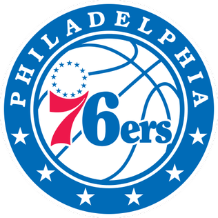

Philadelphia 76ers (thường được gọi là Sixers) là một đội bóng rổ chuyên nghiệp của Mỹ có trụ sở tại khu vực đô thị Philadelphia. 76ers thi đấu tại Hiệp hội Bóng rổ Quốc gia (NBA) với tư cách là thành viên của Đội Đại Tây Dương Hội nghị phía Đông của giải đấu và chơi tại Trung tâm Wells Fargo. Được thành lập vào năm 1946 và ban đầu được gọi là Syracuse Nationals, họ là một trong những nhượng quyền thương mại lâu đời nhất tại NBA và là một trong tám (trong số 23) tồn tại trong thập kỷ đầu tiên của giải đấu.
76ers đã có một lịch sử nổi bật, với nhiều cầu thủ Hall of Fame đã chơi cho tổ chức, bao gồm Dolph Schayes, Hal Greer, Wilt Chamberlain, Chet Walker, Billy Cunningham, Julius Erving, Maurice Cheeks, Bobby Jones, Moses Malone, Charles Barkley , George McGinnis và Allen Iverson. Họ đã giành được ba chức vô địch NBA, lần đầu tiên họ đến với tư cách là Syracuse Nationals vào năm 1955. Danh hiệu thứ hai đến vào năm 1967, một đội được dẫn dắt bởi Chamberlain. Danh hiệu thứ ba đến vào năm 1983, giành được bởi một đội do Erving và Malone dẫn đầu. 76ers mới chỉ trở lại NBA Finals một lần kể từ đó: vào năm 2001, nơi họ bị dẫn dắt bởi Iverson và để thua Los Angeles Lakers trong năm trận.